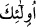

binekleri üstündedirler. Onları melekler karşılar. Hak Teâlâ buyurur ki: “Muttakîleri o
gün heyet hâlinde Rahmân’ın huzûrunda toplarız.” (Meryem, 19/85)
Muttakîleri melekler karşılar. İsyânkârlar kıyâmet şaşkınlığı içinde yapayalnız
kalırlar. Onlarda bir tâat nûru olmadığı gibi, melekler tarafından da karşılanacak
değillerdir. Böyle olunca da onlar yollarını bulamayacaklar, kendilerine yol gösteren de
olmayacaktır. Allah Teâlâ ehl-i cennet hakkında buyurur: “O gün cennetlikler
gerçekten nimetler içinde safâ sürerler. Onlar ve eşleri gölgeler altında tahtlara
kurulurlar. Orada onlar için her çeşit meyve vardır. Bütün arzuları yerine getirilir.”
(Yâsîn, 36/55-57) Cennetlikler, mükâfâtlarının güzelliği sebebiyle size dönüp
bakmazlar. Cehennemlikler ise cezâlarının ağırlığı sebebiyle size merhamet etmezler.
“Selâm size ey düşkünler,” Sizin benzerleriniz sizi nasıl geçmiş? Size yol gösteren yok
ise ben size yol gösteririm. Eğer size hak ettiğiniz şekilde muâmele edecek olursam, bu
işin keremi nerde kalır? et-Teysîr’de böyle yazılıdır.
Sa’dî (k.s.) der ki:
Yûsuf (a.s.) kardeşleri yüzünden zindanda kaldı.
O’nun değeri anlaşıldı ve Mısır’a melik oldu.
Ancak o, kardeşlerini bağışladı.
Sûretleri güzel olanların mânâsı da budur ki
Kötü huylu insanları öldürmezler ve afvederler.
Böylelerinin az da olsa hediyelerini kabûl ederler.
İşte ben de senin makbûl olan lutfundan ümidvârım.
Sana takdime lâyık benim hiçbir şeyim yok,
Bana lütfunu bahşeyle, sana afv ümîdiyle geliyorum.
Beni afv deryândan ümitsiz bırakma ya Rabb!
“İşte onlar felâha erenlerdir.” âyetindeki ( __WORD__ ) kelimesinin iki defa tekrarlanması,
iki hükümden birinin diğerinden ayrı olduğuna işâret etmektedir. Önceki ile ikincisi
arasına atıf harfinin girmesi, ikisinin gerçekten ayrı ayrı olduğuna dikkat çekmektedir.
Felâh sıfatı sâdece onlara mahsûstur. Yahûdî ve hristiyanları kapsamaz. Ayrıca bu âyet
muttakîlerin felâhdan başka özelliklerinin bulunmadığı anlamına gelmez. Buradaki
tahsîs, sıfatın mevsûfuna âid olduğunu gösterir. Mevsûfun sıfatına mahsûs olduğunu
değil. İstediğini elde eden kurtuluş sâhibine zafer yolları açılmıştır, artık kapalı
değildir.
Felâh’ta yarılma, açılma ve kesilme mânâsı vardır. Çiftçilere “fellâh” denilmesi
onların toprağı yarıp açması ve kazması yüzündendir. Arapça’da bir darb-ı mesel olan
“demiri demirle kesmek” de felâh kelimesiyle ifâde edilmiştir. O zaman âyetin mânâsı,
“onlar, kıyâmet günü cennette kurtuluşa ermiş, cehennemden kurtulmuş kimselerdir,
dünyâda ve âhırette hayır onlar için ayrılmıştır.” şeklinde olur.
Felâhın meydana gelmesi üç şeyle olur.